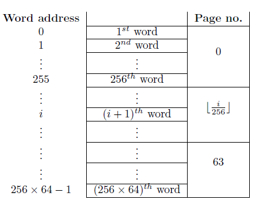
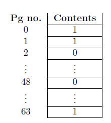

| Page no | Contents | Word addr |
|---|---|---|
| 0 | ROM code | 0 -- 255 |
| 1 | OS Startup code | 256 -- 511 |
| 2 | Static Page Tables | 512 -- 559 |
| Memory Free List | 560 -- 623 | |
| Global File Table | 624 -- 719 | |
| Ready List | 720 -- 731 | |
| Unallocated | 732 -- 767 | |
| 3 | Process Table | 768 -- 959 |
| Unallocated | 960 -- 1023 | |
| 4 | File Allocation Table | 1024 -- 1535 |
| 5 | ||
| 6 | Disk Free List | 1536 -- 2047 |
| 7 | ||
| 8 | INIT process | 2048 -- 2815 |
| 9 | ||
| 10 | ||
| 11 -- 55 | User Programs | 2816 -- 14335 |
| 56 | INT 0 | 14336 -- 14591 |
| 57 | INT 1 | 14592 -- 14848 |
| ... | ... | ... |
| 63 | INT 7 | 16128 -- 16383 |
The 256th word of the memory has a word address 255 and belongs to page 0. In general, the nth word has the word address (n-1), where 1 ≤ n ≤ 16384 and belongs to the page ⌊ (n-1)/256 ⌋.
Before explaining the page table, we explain two well known terms:
Refer "Memory management strategies" in the book [SGG05] to know more about paging.
The page table contains information relating to the actual location in the memory, i.e., the physical address, of the data specified by the logical address. Each entry of a page table contains the page number in the memory where the data specified by the logical address resides.
It is the process of obtaining the physical address from the logical address. It is done by the machine in the following way. Refer [Bac86] for more details.
Consider the scenario shown in figure above. Here the logical address generated is 570, so the page number is ⌊ 570/265 ⌋ = 2 and word address is 570 mod 256 = 58. The looked up value from the page table is 48. Thus the resultant physical address is 48x256 + 58.
The following figure indicates that pages 0, 1 and 63 of the memory are not free while pages 2 and 48 are free.
The entire structure of memory is outlined at the beginning